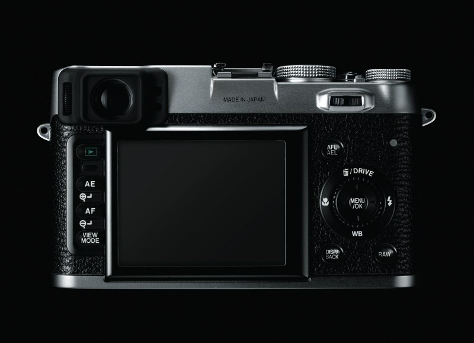
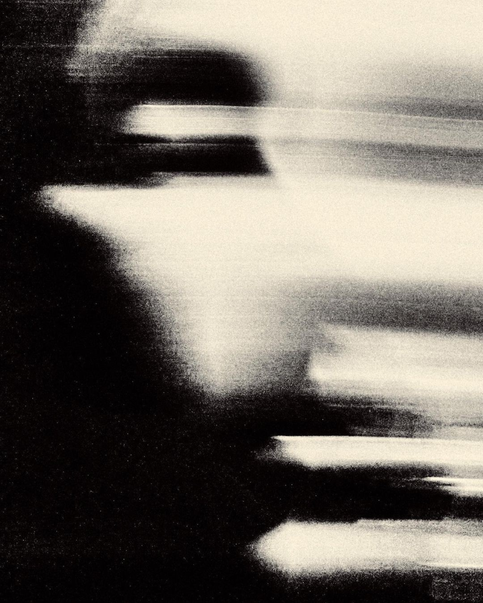
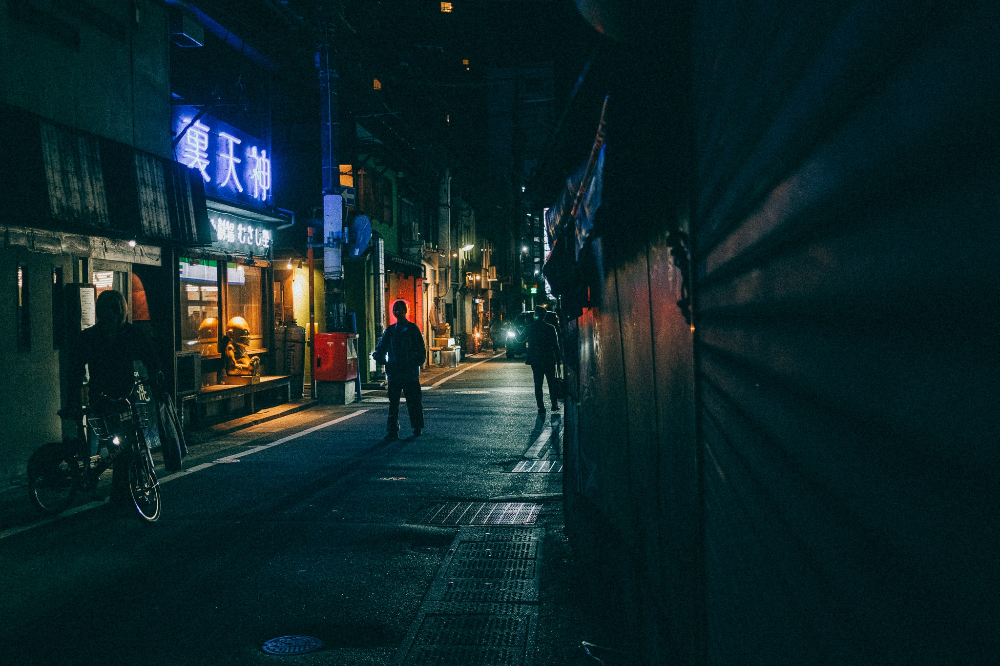
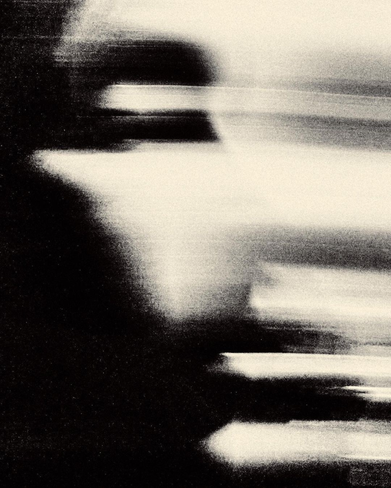
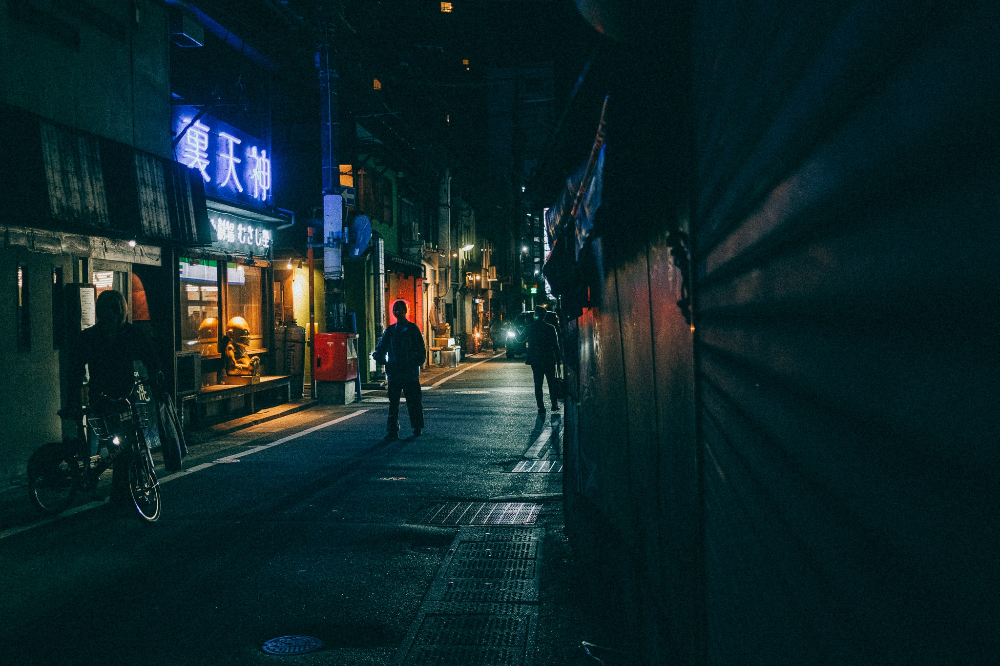

OF PHOTO
OF PHOTO
 NAME
NAMEOF PHOTO
OF PHOTO
 NAME
NAMEOF PHOTO
OF PHOTO
OF PHOTO
OF PHOTO
Fujifilm
Fondée le 20/01/1934
Fujifilm a commencé comme une entreprise de film photosensible avant de devenir un pionnier de l'image.
Le tournant : FinePix X100 (2011)
En mars 2011, Fujifilm dévoile le FinePix X100, premier compact à capteur APS-C et objectif fixe 23 mm f/2, avec viseur hybride.
Un véritable game-changer qui a fait basculer la marque vers l'ère numérique haut de gamme
FinePix X100
Aujourd'hui : X100VI
Sortie 2024
Le Fujifilm X100VI est la sixième génération iconique X100.
-
Capteur X-Trans CMOS 5 HR de 40,2 MP
Équipé du même capteur que le X-T5, garantissant une qualité d'image exceptionnelle.
-
Stabilisation IBIS (5 axes)
Une première dans la série X100, permettant la prise de vue à main levée même en conditions de faible luminosité.
-
fixe 23mm f/2 revisité
Un angle de champ idéal pour la photographie de rue et les portraits environnementaux, avec un rendu bokeh soigné.
-
Vidéo 6.2K
Offre désormais des capacités vidéo avancées pour un enregistrement haute définition professionnel.
-
Écran arrière inclinable et tactile
Allie praticité moderne et design vintage sans compromis.
-
Simulations de film Fujifilm
Profitez des célèbres profils Classic Chrome, Provia, Acros ou Nostalgic Neg pour des images parfaitement optimisées dès la prise de vue.
 


